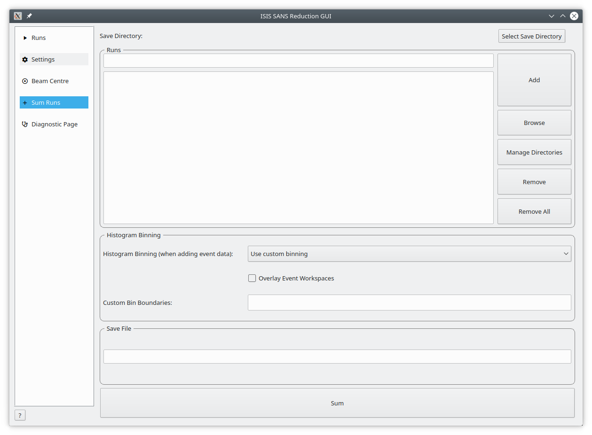

\(\renewcommand\AA{\unicode{x212B}}\)
Run Summation¶
{kind=link}
The Add Runs page provides a simple tool for adding similar runs (usually of short duration) together. The user builds a list of multiple histogram or event files (but not mixed) before pressing the sum button to produce a single output file in the mantid output directory.
The resulting ‘add file’ is then the equivalent of having measured one run for an extended period. The final add file is named after the first run number that is entered.
Runs To Sum¶
Run Query Box |
This box is used to add runs to the summation table below. The user can enter one or more comma separated run numbers and press Add or the enter key to search for runs with a matching number. |
Run Summation List |
This list contains the files to be summed. |
Browse |
This button is used to select one or more nexus files to be added to the summation table. |
Manage Directories |
Opens the ‘Manage User Directories’ window allowing the user to add/remove directories from the mantid search path and to set the ‘Output Folder’ where the summation result will be saved. |
Remove |
Removes an entry from the summation table. Note, this does not delete the file itself, it just removes it from the list of files to be summed. |
Remove All |
Removes all entries from the summation table. As above, this will only remove the entries from the table, not the files themselves. |
Histogram Binning¶
This panel allows the user to specify the binning parameters to be applied when summing event data. There are three different ways to add files containing event data [1].
Custom Binning¶
If this option is chosen a line edit field becomes available which the user can use to set the preferred binning boundaries. The format of this input is identical to the format required by the Rebin Algorithm.
Use Binning From Monitors¶
If this option is chosen the binning is taken from the monitors.
Save As Event Data¶
If this option is chosen, the output file will contain event data. The output is not an event workspace but rather a group workspace, which contains two child event workspaces, one for the added event data and one for the added monitor data.
With ‘Overlay Event Workspaces’ Disabled the event data from the files is added using the event the Plus Algorithm. Timestamps of the events and of the logs are not changed as indicated in the image below.
{kind=link}
Simple addition of event data¶
With ‘Overlay Event Workspaces’ Enabled and no Additional Time Shifts specified, the event data of the different files is shifted on top of each other.
In the case of two workspaces the time difference between them is determined by the difference between their first entry in the proton charge log. This time difference is then applied to all timestamps of the second workspace.
The second workspace is essentially laid on the first. The same principle applies if more than two workspaces are involved as this is a pairwise operation. The working principle is illustrated below:
{kind=link}
Adding two workspaces by overlaying them¶
Note that the underlying mechanism for time shifting is provided by the ChangeTimeZero Algorithm. Using this option will result in a change to the history of the underlying data.
With ‘Overlay Event Workspaces’ Enabled you can specify Additional Time Shifts.
Additional time shifts are specified as a comma separated list of numbers where each shift is the time to shift by in seconds. The list should contain exactly N-1 entries where N is the number of runs to be summed.
Similar to the case above the workspaces are overlaid. This specified time shift is in addition to the actual overlay operation. A positive time shift will shift the second workspace into the future, whereas a negative time shift causes a shift into the past. This allows the user to fine tune the overlay mechanism.
Both situations are illustrated below:
{kind=link}
Overlaid workspaces with a positive time shift (into the future).¶
{kind=link}
Overlaid workspaces with a negative time shift (into the past).¶
Just as above, using this option means that the history of the underlying data will be changed.